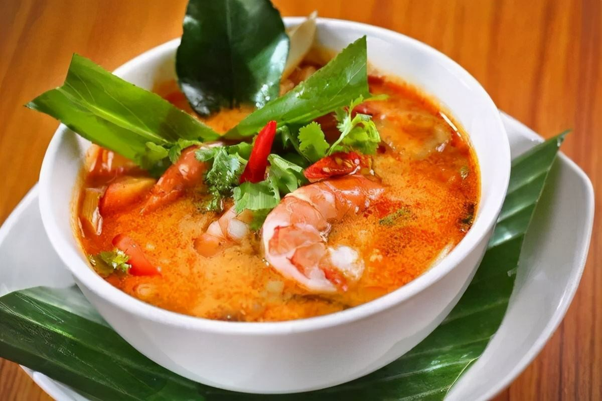

| 网站首页 | 中国 | 泰国 | 印度尼西亚 | 土耳其 | 日本 | 韩国 | 朝鲜 | 登录 |
| 介绍视频 | 简介 | 了解更多... |
| 泰国旧名暹罗，1949年5月11日，泰国人用自己民族的名称，把“暹罗”改为“泰”，主要是取其“自由”之意。泰国是世界最闻名的旅游胜地之一，旅游业同样是国家支柱产业，泰国在世界上素有“佛教之国”、“大象之国”、“微笑之国”等称誉。
一提起泰国，大家耳熟能详的都能联想到：大皇宫，玉佛寺，普吉岛，芭提雅等知名旅游胜地，人妖也是泰国的一大特色。
|
|
|  |
| 风景指南 | 美食指南 | 酒店指南 | 其它更多 |